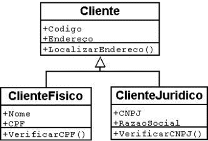
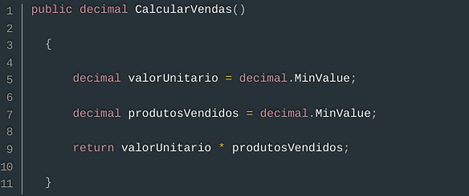
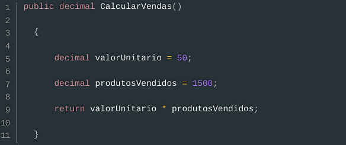
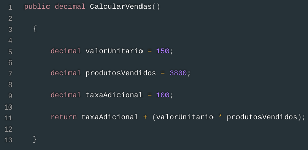
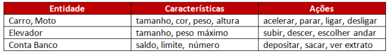
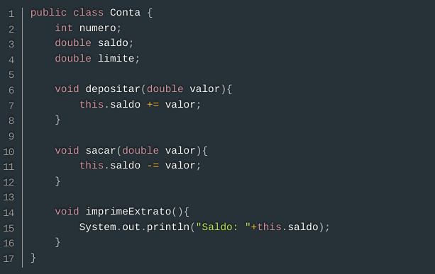
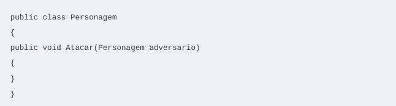
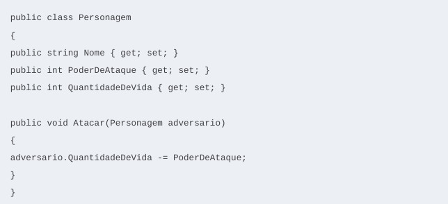

A Programação Orientada a Objetos, também conhecida pela sigla POO, é uma forma de programação que introduz o conceito de objetos como elementos centrais na construção dos sistemas. Utilizando a criação de diversos objetos que combinam atributos (características) e métodos (comportamentos) desses objetos. A POO possui quatro pilares que são fundamentais para sua compreensão e construção. Esses quatro pilares são: Encapsulamento, Herança, Polimorfismo e Abstração. Além disso, é bom salientar sobre as classes, que são muito usadas quando falamos sobre a Programação Orientada a Objetos. Classes são os modelos onde surgirão os objetos. Assim, as classes definem algumas propriedades e métodos que deverão fazer parte do objeto que derivar dela ou então, como dizemos, os objetos que serão instanciados a partir dela.
Começando pelo encapsulamento, esse pilar visa controlar o acesso aos atributos e métodos de um objeto, ou seja, suas características e comportamentos. Isso é alcançado através da definição de níveis de visibilidade, como público, protegido e privado. A ideia por trás do encapsulamento é que os detalhes internos de um objeto devem ser ocultados do mundo exterior, da interface pública. Ao ocultar os detalhes internos, é possível proteger os dados de alterações indesejadas e manter a integridade do objeto. Esse pilar promove a modularidade, facilita a manutenção e evolução do código e ajuda a prevenir erros decorrentes de acessos incorretos aos dados.
Tudo o que o usuário externo precisa conhecer a respeito de uma classe encontra-se em propriedades ou métodos declarados como públicos.
Somente os códigos membros da classe são capazes de acessar seus métodos e variáveis privados. Isso garante que não ocorrerão ações inadequadas, mas exige que a interface pública seja planejada com cautela para que o funcionamento interno da classe não seja muito exposto.
Por conta dessa técnica, o conhecimento a respeito da implementação interna da classe é desnecessário do ponto de vista do objeto, uma vez que isso passa a ser responsabilidade dos métodos internos da classe.
Dominar esse conceito é fundamental, uma vez que com ele é possível deixar o código mais legível, funcional e reutilizável. Para isso, é criada uma estrutura que contém métodos que podem ser utilizados por qualquer outra classe, sem causar inconsistências no desenvolvimento de um código.
Na prática, isso é feito por meio de dois métodos: os getters e os setters. O primeiro tem por objetivo retornar o valor que lhe foi pedido
Já o segundo recebe como argumento uma informação, que pode ser qualquer tipo de dados suportados pela linguagem.
Podemos dizer, portanto, que os objetos possuem uma parte interna, os dados, que não podem ser acessados por outros objetos do sistema, e outra externa, os métodos, que permitem a alteração ou verificação de seu estado.
Uma analogia para simplificar o funcionamento do encapsulamento é o uso do celular. Quando usamos um telefone, interagimos com uma interface simples, como a tela, botões e aplicativos. No entanto, não pensamos na complexidade interna do hardware, o sistema operacional, ou outros sistemas. O telefone encapsula todos esses detalhes complexos e fornece uma interface simples para o usuário. Assim como é feito e usado encapsulamento na construção de um código.
Benefícios: Vale ressaltar quais são os benefícios que esse pilar oferece para a Programação Orientada a Objeto, sendo eles:
A Herança possibilita que as classes compartilhem seus atributos, métodos e outros membros da classe entre si. Para a ligação entre as classes, a herança adota um relacionamento esquematizado hierarquicamente. Na Herança temos dois tipos principais de classe:

Assim temos:
Agora, abordando sobre outro pilar dessa programação, definimos Polimorfismo como um princípio a partir do qual as classes derivadas de uma única classe base são capazes de invocar os métodos que, embora apresentem a mesma assinatura, comportam-se de maneira diferente para cada uma das classes derivadas. O Polimorfismo é um mecanismo por meio do qual selecionamos as funcionalidades utilizadas de forma dinâmica por um programa no decorrer de sua execução. Com o Polimorfismo, os mesmos atributos e objetos podem ser utilizados em objetos distintos, porém, com implementações lógicas diferentes. Isto é, polimorfismo deriva da palavra polimorfo, que significa multiforme, ou que pode variar a forma. Para a POO, polimorfismo é a habilidade de objetos de classes diferentes responderem a mesma mensagem de diferentes maneiras. Ou seja, várias formas de responder à mesma mensagem. Por exemplo: podemos dizer que uma classe chamada Vendedor e outra chamada Diretor podem ter como base uma classe chamada Pessoa, com um método chamado CalcularVendas. Se este método (definido na classe base) se comportar de maneira para o Vendedor e para o Diretor, ele será considerado um método polimórfico, ou seja, um método de várias formas. Assim podemos ter:



Nessas classes temos o mesmo método, mas com a codificações diferentes.
Além disso, um dos principais benefícios do polimorfismo é a reutilização de código, uma vez que é possível criar classes genéricas que podem ser utilizadas de maneira flexível em diferentes contextos. Além disso, o polimorfismo torna o código mais legível e organizado, facilitando a manutenção e a evolução do sistema.
Analogia/Exemplo: Um dono de uma fábrica de brinquedos solicitou que seus engenheiros criassem um mesmo controle remoto para todos os brinquedos de sua fábrica. A única restrição era que cada brinquedo atendesse aos comandos específicos definidos pelo controle.
O controle remoto teria vários botões, sendo que todos eles seriam úteis para todos os brinquedos. Assim, quando o usuário clicasse no botão mover, o controle enviaria o sinal MOVER para todos os brinquedos que estivessem no raio de dois metros.
Assim, quando o brinquedo recebe o sinal MOVER, ele se move de acordo com a sua função. Para o avião, mover significa VOAR, para o barco significa NAVEGAR, e para o automóvel, CORRER. Observe que os brinquedos respondem ao mesmo sinal de formas diferentes. Temos aqui então um caso de polimorfismo.
A Abstração é considerada o pontapé inicial dentro de qualquer linguagem Orientada a Objetos. A Abstração na Programação Orientada a Objetos acontece bem antes do código e é muito importante que seja bem definida. Assim, facilitará a arquitetura do projeto como um todo. Para uma ideia ser bem executada, antes ela precisa ser bem estruturada. É utilizada para a definição de entidades do mundo real. Sendo onde são criadas as classes. Essas entidades são consideradas tudo que é real, tendo como consideração as suas características e ações, veja na figura como funciona.

Exemplo de abstração da classe Conta:

Como abstrair um modelo que faça sentido como um objeto?
Para facilitar o processo de abstração na Programação Orientada a Objetos, definimos 3 princípios para uma abstração concisa, são eles:


Benefícios: A abstração traz vários benefícios para o desenvolvimento de software, como:
Com todo o desenvolvimento dessa pesquisa, é notável a importância do Encapsulamento, Herança, Polimorfismo e Abstração para a Programação Orientada a Objeto, uma vez que, esses pilares permiti a criação de um código funcional e de completa compreensão tanto dos desenvolvedores quanto dos usuários. Isto é, permitem a criação de sistemas flexíveis, reutilizáveis e de fácil manutenção.
Basicamente sempre, pois a interface, a forma como classes e objetos conversam um com o outro, deve sempre estar isolada da forma como executam o que se propuseram a fazer.
Para fazer isso no Java, basta declarar que os atributos não podem ser acessados de fora da classe por meio da palavra-chave private
A especialização acontece quando estamos descendo na hierarquia de classes, ou seja, indo de uma classe mais genérica (por exemplo, superclasse Cliente) para as classes mais específicas (por exemplo, subclasses ClienteFisico e ClienteJuridico). Já a generalização é o inverso: partimos das classes mais específicas e vamos subindo na hierarquia de classes, indo para uma classe mais genérica.
Resumidamente, A Herança fala a respeito das classes e como as subclasses herdam características das superclasses, dessa forma os atribustos da superclasse permanece na sub porém essa possui mais especificações. Por outro lado o polimorfismo refere-se a possibilidade de um objeto ou classe mudar de forma, ou seja, responderem a mesma mensagem de diferentes maneiras
A abstração permite que os desenvolvedores criem as soluções do software enquanto continua com a simplicidade e clareza
A abstração permite definir os atribustos do objeto e/ou classe enquanto o encapsulamento permite ocultar dados para protege-ló.